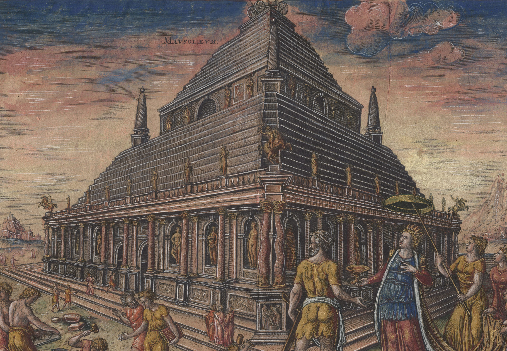

Mauzoleum w Halikarnasie - Grobowiec Króla
Mauzoleum było grobowcem wzniesionym dla Mausolusa, satrapy (namiestnika) Persji, i jego żony Artemizji II. Było tak imponujące, że od jego nazwy wywodzi się współczesne słowo "mauzoleum". Budowla łączyła w sobie style architektoniczne grecki, licyjski i egipski, osiągając wysokość około 45 metrów.
Zostało zniszczone przez serię trzęsień ziemi między XII a XV wiekiem. Jego ruiny zostały później wykorzystane przez Krzyżowców do budowy Zamku Bodrum.